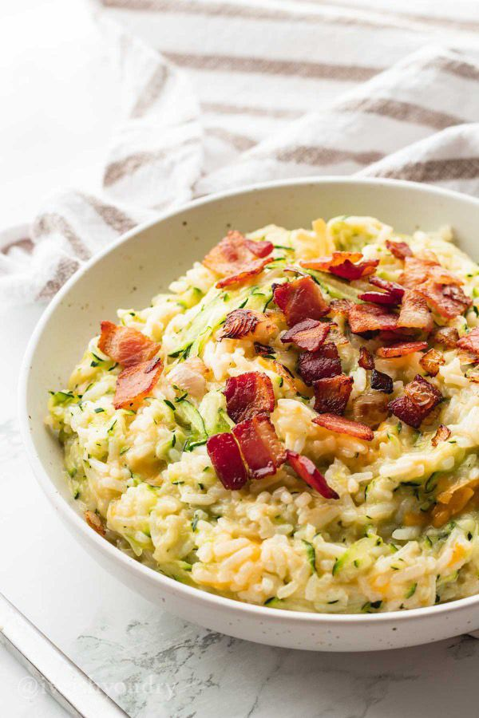

Home
Cheesy Zucchini Risotto

This Zucchini Rice with Bacon is a delicious and quick side dish that combines the creamy goodness of cheese, the savory crunch of bacon and the healthy freshness of zucchini.
Perfect meal any meal, the dish is easy to make and packed with flavor. Whether you're serving it with chicken, beef, or as an vegetarian option, this dish is sure to become a family favourite.
The richness of the melted cheese pairs wonderfully with the tender zucchini, while crispy bacon adds a deligthful smoky crunch. Here's how to make it:
Ingredients
- 2 cups chicken broth
- 1 cup rice
- 1 medium zucchini, shredded
- 2 tbsp butter
- 1/4 tsp salt
- 1 onion
- 4 strips of bacon, diced
- 1 cup cheddar cheese, shredded
Preparation
- Bring chicken broth to a boil and add rice, stir. Reduce heat to low and cover. Let it cook for 20 minutes.
- Meanwhile heat a skillet to medium heat and add bacon until its brown and crispy and the onion bits are tender. Remove from skillet with a slotted spoon to a paper towel. Set aside.
- Once rice is cooked uncover and add butter, zucchini and salt. Stir to combine. Add cheese and stir until the cheese melts completely. Top with the crispy bacon and shallots or stir it in the rice.
Serve and Enjoy
For more Recipes:
Chocolate Brownies
Chocolate Chip Cookies
Chicken Alfredo
Eggs Benedict